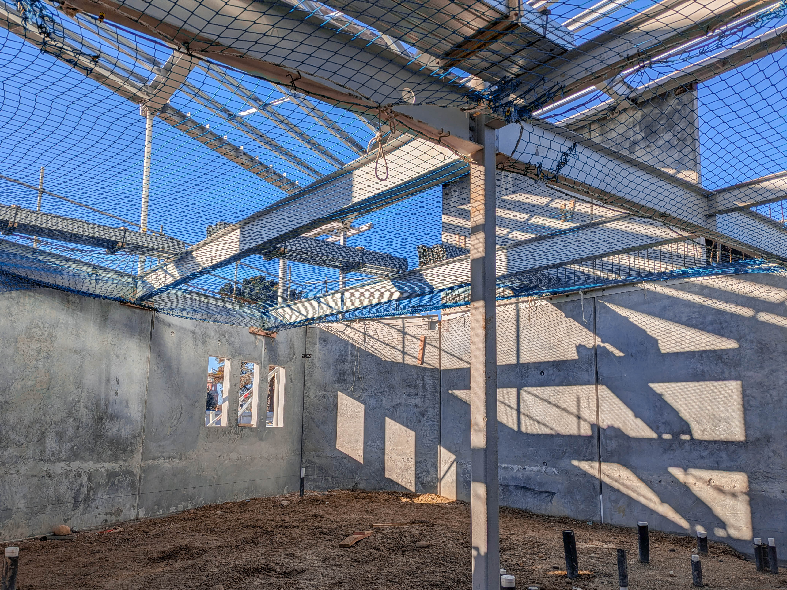
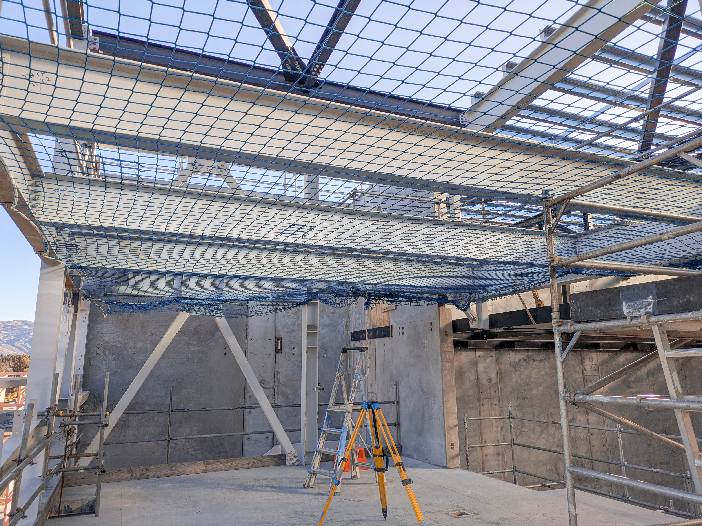

idea 1 / centered sign-off
clean, competent, less card-like
our mission
fall protection done properly.
Most builders don't think about safety nets until they have to, and when they do, it needs to be fast, compliant, and done right the first time.

zero compromise

idea 2 / net mesh spotlight
expanded, with simpler copy underneath
our mission
fall protection done properly.
Expert, reliable safety net installations that protect workers at heights and keep your project moving.
idea 3 / split proof
clear residential and commercial story

residential
our mission
fall protection done properly.
From new home frames to large commercial sites, we install safety netting with the same care: fast, compliant, and ready for the next trade.

commercial
idea 4 / site stamp
bold headline, proof underneath
our mission
fall protection done properly.
When the nets are right, everyone can get on with the build. No fuss, no shortcuts, no wondering whether the install is up to scratch.
01
fast
02
compliant
03
proper

idea 5 / dual scale
large image impact with a compact mission lockup

commercial install
big sites, same standard.
our mission
fall protection done properly.

residential install
idea 6 / fast compliant
high urgency without feeling gimmicky
our mission
fall protection done properly.
Safety netting is usually urgent by the time you call. We make it simple: clear communication, reliable installation, and a tidy handover so your crew can keep moving.

idea 7 / covered
simple, confident final contender
homes and commercial sites covered
fall protection done properly.
Properly installed nets give everyone confidence before work continues above the floor. We bring the gear, the experience, and the care to get it right.
idea 8 / clean proof
centered statement with image proof underneath
our mission
fall protection done properly.
Residential builds, commercial sites, and every install in between. Straightforward safety netting that is ready when the work is.
residential installs
commercial installs
idea 9 / site ready
headline first, compact trust row, paired images
our mission
fall protection done properly.
clear communication
compliant installation
minimal downtime
idea 10 / proper standard
more premium, still direct and service-led
our mission
fall protection done properly.
homes
right first time
commercial
The first section after the hero should feel simple and certain: this is what we do, this is who we do it for, and this is the standard we hold.